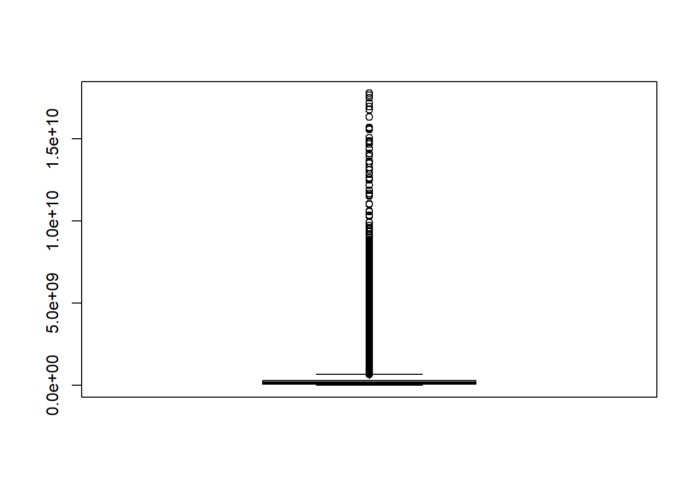
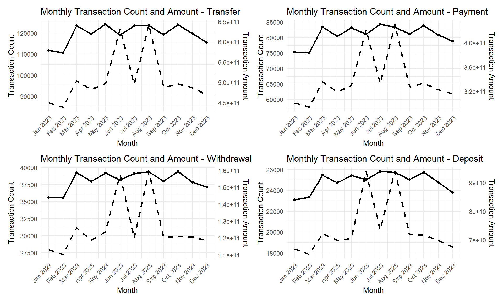
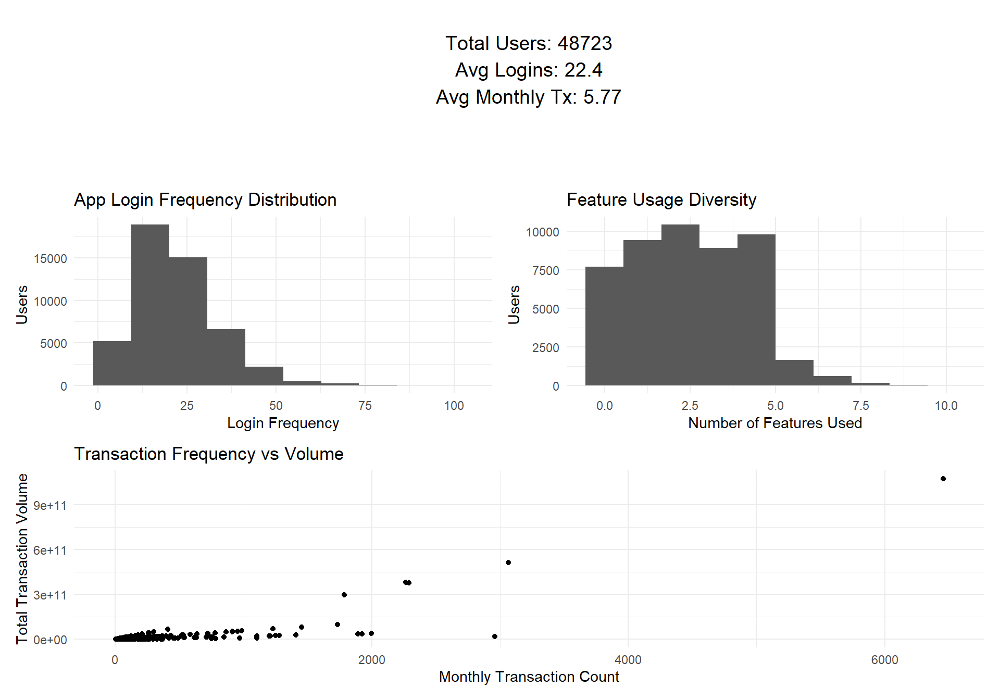
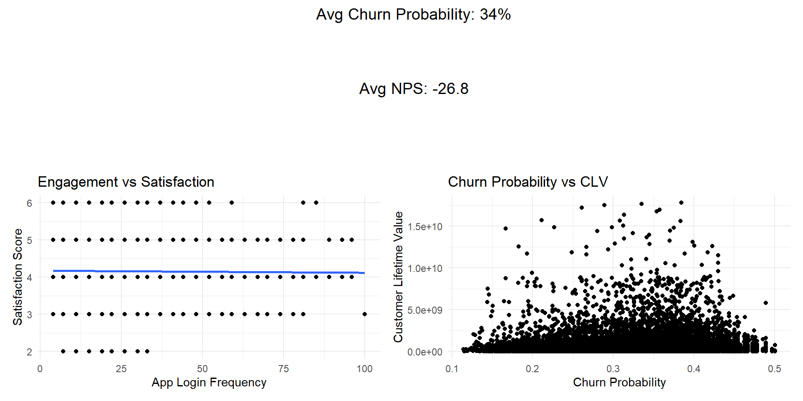
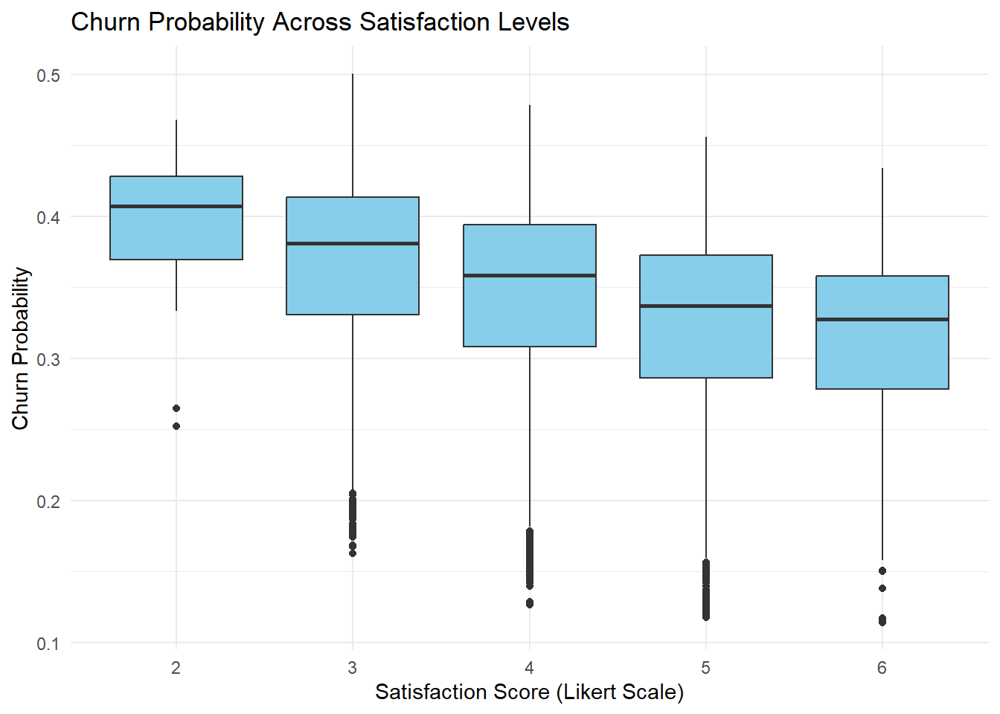
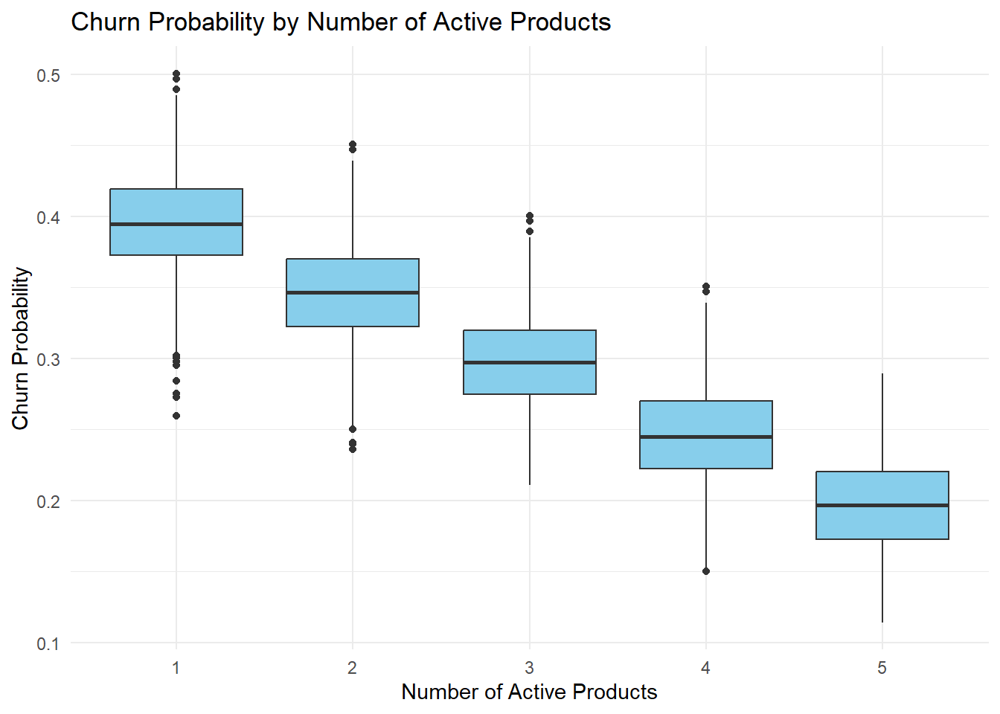

pacman::p_load(dplyr,tidyr,ggplot2,readxl,scales,ggstatsplot,patchwork,lubridate)Take-home Exercise 2
1. Overview
1.1 Project Brief
Take-home exercise 2 is a preliminary work of the final group project - Decoding Chaos. Armed conflicts due to political violence and coordinated attacks targeting innocent civilians, have been on the rise globally. This threatens the public at both physical and psychological levels, and raised concerns among the Defense and Security sectors on the urgency to develop effective counter terrorism measures and strategies. A good visual analysis of armed conflicts is essential to help (1) discover armed conflicts trends and (2) conceptualise armed conflict spaces.
The project team consists of three members, and each member will take one of the main prototype modules as follows:
Exploratory Data Analysis & Confirmatory Data Analysis
Cluster Analysis
Decision Tree Analysis
1.2 Project Objective
The project will be using data from A comprehensive dataset of customer behavior in Latin American Fintech: 12-month transactional and demographic data for churn analysis paper. The objective of my assignment is to build a prototype - user interface (UI) design on Exploratory Data Analysis & Confirmatory Data Analysis that provides easy-to-use and insightful visualisation tools.
2. Data Preparation
2.1 Overview of the Data
The dataset contains information on 48,723 customers of a Colombian fintech company, collected over a 12-month period from January 4, 2023, to December 29, 2023. The 48,723 customers represent the complete active customer base for calendar year 2023, making this a comprehensive population study rather than a sample.
The dataset comprises 57 variables categorized into demographics, product usage, transaction records, customer feedback, digital engagement, and derived metrics.
Data are organized in two CSV files with relational structure:
customer_data.csv: Contains customer-level information including demographics, product portfolio, satisfaction metrics, and aggregated behavioral features (one row per customer, 48,723 rows).
transactions_data.csv: Contains transaction-level data for all customers over the 12-month period (one row per transaction, 3,159,157 rows).
2.2 Install and Launch R Packages
The project uses p_load() of pacman package to check if the R packages are installed in the computer.
The following code chunk is used to install and launch the R packages.
2.3 Import Data
The project will examine A comprehensive dataset of customer behavior in Latin American Fintech. There are 2 files which are
customer <- read.csv("data/customer_data.csv")transaction <- read.csv("data/transactions_data.csv")2.4 Data Cleaning
2.4.1 Handling missing value
To examine missing values for each variable individually, the code chunk below was used to compute the number of missing observations by column.
colSums(is.na(customer)) customer_id age
0 0
gender location
0 0
income_bracket occupation
0 0
education_level marital_status
0 0
household_size acquisition_channel
0 0
customer_segment savings_account
0 0
credit_card personal_loan
0 0
investment_account insurance_product
0 0
active_products app_logins_frequency
0 0
feature_usage_diversity bill_payment_user
0 0
auto_savings_enabled credit_utilization_ratio
0 18263
international_transactions failed_transactions
0 0
tx_count avg_tx_value
0 0
total_tx_volume first_tx
0 0
last_tx base_satisfaction
0 0
tx_satisfaction product_satisfaction
0 0
satisfaction_score nps_score
0 0
last_survey_date support_tickets_count
0 0
resolved_tickets_ratio app_store_rating
0 0
feedback_sentiment feature_requests
0 0
complaint_topics clv_segment
0 0
monthly_transaction_count average_transaction_value
0 0
total_transaction_volume transaction_frequency
0 0
last_transaction_date preferred_transaction_type
0 0
first_transaction_date weekend_transaction_ratio
0 0
avg_daily_transactions customer_tenure
0 0
churn_probability customer_lifetime_value
0 0 After inspecting the dataset using colSums(is.na(customer)), only credit_utilization_ratio has missing value. There is a lot of missing value so, this column will be droped using the code chunk below
customer <- customer %>% select(-credit_utilization_ratio)2.4.2 Check Data Dulication
For, customer data, we need to check whether customer id is duplicate or not
sum(duplicated(customer$customer_id))[1] 02.4.2 Correct Data Type
2.4.2.1 Check Data Type of Each Column
str(customer)'data.frame': 48723 obs. of 53 variables:
$ customer_id : int 93716481 49020929 52690950 23199751 61997066 85721098 97779724 65536017 22020116 14024733 ...
$ age : int 44 44 45 45 44 45 44 44 45 44 ...
$ gender : chr "Male" "Male" "Male" "Male" ...
$ location : chr "Pereira, Risaralda" "Cali, Valle del Cauca" "Barranquilla, Atlántico" "Bogotá, Cundinamarca" ...
$ income_bracket : chr "Very High" "Medium" "High" "High" ...
$ occupation : chr "Engineer" "Construction Worker" "Construction Worker" "Electrician" ...
$ education_level : chr "Master" "Bachelor" "Bachelor" "High School" ...
$ marital_status : chr "Married" "Married" "Married" "Single" ...
$ household_size : int 5 2 4 2 3 4 4 3 1 3 ...
$ acquisition_channel : chr "Partnership" "Paid Ad" "Paid Ad" "Referral" ...
$ customer_segment : chr "occasional" "regular" "inactive" "inactive" ...
$ savings_account : chr "True" "True" "True" "True" ...
$ credit_card : chr "True" "False" "False" "False" ...
$ personal_loan : chr "False" "False" "False" "False" ...
$ investment_account : chr "False" "False" "True" "True" ...
$ insurance_product : chr "True" "False" "True" "False" ...
$ active_products : int 1 5 3 2 1 1 1 4 2 3 ...
$ app_logins_frequency : int 15 30 4 15 19 15 44 22 7 11 ...
$ feature_usage_diversity : int 3 0 4 4 1 4 6 1 1 6 ...
$ bill_payment_user : chr "False" "True" "True" "True" ...
$ auto_savings_enabled : chr "False" "False" "False" "False" ...
$ international_transactions: int 1 1 1 1 0 0 0 0 0 1 ...
$ failed_transactions : int 0 0 0 1 0 0 1 1 0 0 ...
$ tx_count : int 76 10 10 23 18 15 24 45 134 13 ...
$ avg_tx_value : num 1679872 5445810 640335 660180 14574469 ...
$ total_tx_volume : num 1.28e+08 5.45e+07 6.40e+06 1.52e+07 2.62e+08 ...
$ first_tx : chr "2023-01-05" "2023-02-05" "2023-01-31" "2023-01-10" ...
$ last_tx : chr "2023-12-25" "2023-12-20" "2023-12-12" "2023-12-24" ...
$ base_satisfaction : num 9.21 6.07 8.2 7.53 6.61 ...
$ tx_satisfaction : num 0.38 0.05 0.05 0.115 0.09 0.075 0.12 0.225 0.67 0.065 ...
$ product_satisfaction : num 0.6 0.2 0.6 0.4 0.4 0.6 0.4 0.4 0.6 0.8 ...
$ satisfaction_score : int 5 3 4 4 3 4 4 4 5 4 ...
$ nps_score : int -7 -46 -29 -31 -47 -29 -34 -36 -4 -27 ...
$ last_survey_date : chr "2023-12-16" "2023-05-05" "2023-11-16" "2023-05-07" ...
$ support_tickets_count : int 1 1 0 2 2 1 1 0 2 0 ...
$ resolved_tickets_ratio : num 0 1 0 0.5 1 1 1 0 1 0 ...
$ app_store_rating : num 3.5 4 5 4.5 4 4 5 4.5 4.5 4.5 ...
$ feedback_sentiment : chr "Neutral" "Positive" "Positive" "Positive" ...
$ feature_requests : chr "Budgeting tools" "" "" "Cryptocurrency trading, Budgeting tools" ...
$ complaint_topics : chr "" "" "" "" ...
$ clv_segment : chr "Gold" "Bronze" "Gold" "Bronze" ...
$ monthly_transaction_count : num 1.43 1.57 2.5 1.56 2.11 ...
$ average_transaction_value : num 6054025 2127414 3575915 1513354 612674 ...
$ total_transaction_volume : num 60540250 23401550 35759150 21186950 11640800 ...
$ transaction_frequency : num 0.0308 0.0329 0.05 0.0478 0.0619 ...
$ last_transaction_date : chr "2023-12-05" "2023-12-18" "2023-10-27" "2023-11-30" ...
$ preferred_transaction_type: chr "Transfer" "Transfer" "Transfer" "Transfer" ...
$ first_transaction_date : chr "2023-01-05" "2023-02-05" "2023-01-31" "2023-01-10" ...
$ weekend_transaction_ratio : num 0.3 0.182 0.3 0.143 0.316 ...
$ avg_daily_transactions : num 0.0308 0.0329 0.05 0.0478 0.0619 ...
$ customer_tenure : num 11.63 11.5 8.77 10.73 11.63 ...
$ churn_probability : num 0.362 0.182 0.321 0.337 0.398 ...
$ customer_lifetime_value : num 3.12e+08 1.67e+08 1.94e+07 3.60e+07 3.05e+08 ...2.4.2.2 Correct the data type
Customer_data
customer$customer_id <- as.character(customer$customer_id)
customer$first_tx<- as.Date(customer$first_tx)
customer$last_tx <- as.Date(customer$last_tx)
customer$last_survey_date <- as.Date(customer$last_survey_date)
customer$last_transaction_date <- as.Date(customer$last_transaction_date)
customer$first_transaction_date <- as.Date(customer$first_transaction_date)recheck the data type
str(customer)'data.frame': 48723 obs. of 53 variables:
$ customer_id : chr "93716481" "49020929" "52690950" "23199751" ...
$ age : int 44 44 45 45 44 45 44 44 45 44 ...
$ gender : chr "Male" "Male" "Male" "Male" ...
$ location : chr "Pereira, Risaralda" "Cali, Valle del Cauca" "Barranquilla, Atlántico" "Bogotá, Cundinamarca" ...
$ income_bracket : chr "Very High" "Medium" "High" "High" ...
$ occupation : chr "Engineer" "Construction Worker" "Construction Worker" "Electrician" ...
$ education_level : chr "Master" "Bachelor" "Bachelor" "High School" ...
$ marital_status : chr "Married" "Married" "Married" "Single" ...
$ household_size : int 5 2 4 2 3 4 4 3 1 3 ...
$ acquisition_channel : chr "Partnership" "Paid Ad" "Paid Ad" "Referral" ...
$ customer_segment : chr "occasional" "regular" "inactive" "inactive" ...
$ savings_account : chr "True" "True" "True" "True" ...
$ credit_card : chr "True" "False" "False" "False" ...
$ personal_loan : chr "False" "False" "False" "False" ...
$ investment_account : chr "False" "False" "True" "True" ...
$ insurance_product : chr "True" "False" "True" "False" ...
$ active_products : int 1 5 3 2 1 1 1 4 2 3 ...
$ app_logins_frequency : int 15 30 4 15 19 15 44 22 7 11 ...
$ feature_usage_diversity : int 3 0 4 4 1 4 6 1 1 6 ...
$ bill_payment_user : chr "False" "True" "True" "True" ...
$ auto_savings_enabled : chr "False" "False" "False" "False" ...
$ international_transactions: int 1 1 1 1 0 0 0 0 0 1 ...
$ failed_transactions : int 0 0 0 1 0 0 1 1 0 0 ...
$ tx_count : int 76 10 10 23 18 15 24 45 134 13 ...
$ avg_tx_value : num 1679872 5445810 640335 660180 14574469 ...
$ total_tx_volume : num 1.28e+08 5.45e+07 6.40e+06 1.52e+07 2.62e+08 ...
$ first_tx : Date, format: "2023-01-05" "2023-02-05" ...
$ last_tx : Date, format: "2023-12-25" "2023-12-20" ...
$ base_satisfaction : num 9.21 6.07 8.2 7.53 6.61 ...
$ tx_satisfaction : num 0.38 0.05 0.05 0.115 0.09 0.075 0.12 0.225 0.67 0.065 ...
$ product_satisfaction : num 0.6 0.2 0.6 0.4 0.4 0.6 0.4 0.4 0.6 0.8 ...
$ satisfaction_score : int 5 3 4 4 3 4 4 4 5 4 ...
$ nps_score : int -7 -46 -29 -31 -47 -29 -34 -36 -4 -27 ...
$ last_survey_date : Date, format: "2023-12-16" "2023-05-05" ...
$ support_tickets_count : int 1 1 0 2 2 1 1 0 2 0 ...
$ resolved_tickets_ratio : num 0 1 0 0.5 1 1 1 0 1 0 ...
$ app_store_rating : num 3.5 4 5 4.5 4 4 5 4.5 4.5 4.5 ...
$ feedback_sentiment : chr "Neutral" "Positive" "Positive" "Positive" ...
$ feature_requests : chr "Budgeting tools" "" "" "Cryptocurrency trading, Budgeting tools" ...
$ complaint_topics : chr "" "" "" "" ...
$ clv_segment : chr "Gold" "Bronze" "Gold" "Bronze" ...
$ monthly_transaction_count : num 1.43 1.57 2.5 1.56 2.11 ...
$ average_transaction_value : num 6054025 2127414 3575915 1513354 612674 ...
$ total_transaction_volume : num 60540250 23401550 35759150 21186950 11640800 ...
$ transaction_frequency : num 0.0308 0.0329 0.05 0.0478 0.0619 ...
$ last_transaction_date : Date, format: "2023-12-05" "2023-12-18" ...
$ preferred_transaction_type: chr "Transfer" "Transfer" "Transfer" "Transfer" ...
$ first_transaction_date : Date, format: "2023-01-05" "2023-02-05" ...
$ weekend_transaction_ratio : num 0.3 0.182 0.3 0.143 0.316 ...
$ avg_daily_transactions : num 0.0308 0.0329 0.05 0.0478 0.0619 ...
$ customer_tenure : num 11.63 11.5 8.77 10.73 11.63 ...
$ churn_probability : num 0.362 0.182 0.321 0.337 0.398 ...
$ customer_lifetime_value : num 3.12e+08 1.67e+08 1.94e+07 3.60e+07 3.05e+08 ...transaction_data
transaction$date <- as.Date(transaction$date)
transaction <- transaction %>%
mutate(
year_month = floor_date(date, "month"),
year = year(date),
month = month(date, label = TRUE)
)2.4.3 Extract and Separate Date and Time
2.4.4 Check Correlation
2.4.5 Check outliers
boxplot(customer$customer_lifetime_value)
Q1 <- quantile(customer$customer_lifetime_value, 0.25)
Q3 <- quantile(customer$customer_lifetime_value, 0.75)
IQR <- Q3 - Q12.4.5 Check logic Consistency
Churn_probability should be in [0,1] satsfaction_core must in the range [1,6]
summary(customer) customer_id age gender location
Length:48723 Min. :29.00 Length:48723 Length:48723
Class :character 1st Qu.:30.00 Class :character Class :character
Mode :character Median :45.00 Mode :character Mode :character
Mean :44.54
3rd Qu.:59.00
Max. :60.00
income_bracket occupation education_level marital_status
Length:48723 Length:48723 Length:48723 Length:48723
Class :character Class :character Class :character Class :character
Mode :character Mode :character Mode :character Mode :character
household_size acquisition_channel customer_segment savings_account
Min. : 1.000 Length:48723 Length:48723 Length:48723
1st Qu.: 2.000 Class :character Class :character Class :character
Median : 3.000 Mode :character Mode :character Mode :character
Mean : 3.496
3rd Qu.: 4.000
Max. :13.000
credit_card personal_loan investment_account insurance_product
Length:48723 Length:48723 Length:48723 Length:48723
Class :character Class :character Class :character Class :character
Mode :character Mode :character Mode :character Mode :character
active_products app_logins_frequency feature_usage_diversity
Min. :1.000 Min. : 4.00 Min. : 0.00
1st Qu.:1.000 1st Qu.: 15.00 1st Qu.: 1.00
Median :2.000 Median : 22.00 Median : 2.00
Mean :2.095 Mean : 22.38 Mean : 2.37
3rd Qu.:3.000 3rd Qu.: 30.00 3rd Qu.: 4.00
Max. :5.000 Max. :100.00 Max. :10.00
bill_payment_user auto_savings_enabled international_transactions
Length:48723 Length:48723 Min. :0.0000
Class :character Class :character 1st Qu.:0.0000
Mode :character Mode :character Median :0.0000
Mean :0.4939
3rd Qu.:1.0000
Max. :6.0000
failed_transactions tx_count avg_tx_value total_tx_volume
Min. :0.0000 Min. : 10.00 Min. : 318215 Min. :3.182e+06
1st Qu.:0.0000 1st Qu.: 12.00 1st Qu.: 1339114 1st Qu.:2.016e+07
Median :0.0000 Median : 18.00 Median : 1763107 Median :4.808e+07
Mean :0.1988 Mean : 64.84 Mean : 3564852 Mean :2.575e+08
3rd Qu.:0.0000 3rd Qu.: 35.00 3rd Qu.: 4658536 3rd Qu.:1.204e+08
Max. :4.0000 Max. :77465.00 Max. :51670303 Max. :1.073e+12
first_tx last_tx base_satisfaction tx_satisfaction
Min. :2023-01-04 Min. :2023-05-11 Min. : 4.250 Min. :0.0500
1st Qu.:2023-01-07 1st Qu.:2023-12-05 1st Qu.: 7.326 1st Qu.:0.0600
Median :2023-01-14 Median :2023-12-19 Median : 8.005 Median :0.0900
Mean :2023-01-21 Mean :2023-12-11 Mean : 8.001 Mean :0.1772
3rd Qu.:2023-01-28 3rd Qu.:2023-12-26 3rd Qu.: 8.676 3rd Qu.:0.1750
Max. :2023-08-10 Max. :2023-12-29 Max. :11.937 Max. :1.0000
product_satisfaction satisfaction_score nps_score last_survey_date
Min. :0.0000 Min. :2.000 Min. :-80.00 Min. :2023-01-01
1st Qu.:0.4000 1st Qu.:4.000 1st Qu.:-34.00 1st Qu.:2023-04-01
Median :0.4000 Median :4.000 Median :-28.00 Median :2023-07-03
Mean :0.4737 Mean :4.162 Mean :-26.76 Mean :2023-07-02
3rd Qu.:0.6000 3rd Qu.:5.000 3rd Qu.:-19.00 3rd Qu.:2023-10-01
Max. :1.0000 Max. :6.000 Max. : 23.00 Max. :2023-12-31
support_tickets_count resolved_tickets_ratio app_store_rating
Min. :0.0000 Min. :0.0000 Min. :2.000
1st Qu.:0.0000 1st Qu.:0.0000 1st Qu.:4.000
Median :1.0000 Median :0.5000 Median :4.000
Mean :0.9975 Mean :0.5062 Mean :4.156
3rd Qu.:2.0000 3rd Qu.:1.0000 3rd Qu.:4.500
Max. :7.0000 Max. :1.0000 Max. :5.000
feedback_sentiment feature_requests complaint_topics clv_segment
Length:48723 Length:48723 Length:48723 Length:48723
Class :character Class :character Class :character Class :character
Mode :character Mode :character Mode :character Mode :character
monthly_transaction_count average_transaction_value total_transaction_volume
Min. : 1.000 Min. : 318215 Min. :3.182e+06
1st Qu.: 1.600 1st Qu.: 1339114 1st Qu.:2.016e+07
Median : 2.000 Median : 1763107 Median :4.808e+07
Mean : 5.765 Mean : 3564852 Mean :2.575e+08
3rd Qu.: 3.091 3rd Qu.: 4658536 3rd Qu.:1.204e+08
Max. :6455.417 Max. :51670303 Max. :1.073e+12
transaction_frequency last_transaction_date preferred_transaction_type
Min. : 0.02786 Min. :2023-05-11 Length:48723
1st Qu.: 0.04154 1st Qu.:2023-12-05 Class :character
Median : 0.05764 Median :2023-12-19 Mode :character
Mean : 0.18656 Mean :2023-12-11
3rd Qu.: 0.10314 3rd Qu.:2023-12-26
Max. :215.77994 Max. :2023-12-29
first_transaction_date weekend_transaction_ratio avg_daily_transactions
Min. :2023-01-04 Min. :0.0000 Min. : 0.02786
1st Qu.:2023-01-07 1st Qu.:0.2143 1st Qu.: 0.04154
Median :2023-01-14 Median :0.2800 Median : 0.05764
Mean :2023-01-21 Mean :0.2829 Mean : 0.18656
3rd Qu.:2023-01-28 3rd Qu.:0.3400 3rd Qu.: 0.10314
Max. :2023-08-10 Max. :0.9091 Max. :215.77994
customer_tenure churn_probability customer_lifetime_value
Min. : 4.70 Min. :0.1143 Min. :0.000e+00
1st Qu.:11.17 1st Qu.:0.3029 1st Qu.:5.841e+07
Median :11.63 Median :0.3540 Median :1.297e+08
Mean :11.37 Mean :0.3429 Mean :3.282e+08
3rd Qu.:11.87 3rd Qu.:0.3927 3rd Qu.:2.974e+08
Max. :11.97 Max. :0.5006 Max. :1.777e+10 3. Exploratory Data Analysis
library(corrplot)
corr_matrix <- cor(customer[, sapply(customer, is.numeric)])
corrplot(corr_matrix, method = "color")
3.1 Customer Profile Overview
The dashboard was developed in R using the ggplot2, dplyr, and patchwork packages. Key performance indicators (KPIs), including total customers, average age, and average household size, were calculated using nrow() and mean().
A KPI summary panel was created using ggplot() and annotate() to display the calculated metrics as text.
For categorical variables such as gender, income bracket, customer segment, and acquisition channel, the count() function was used to aggregate frequencies. These results were visualized using bar charts with geom_bar(stat = "identity").
Code
total_customers <- nrow(customer)
avg_age <- round(mean(customer$age), 1)
avg_household <- round(mean(customer$household_size), 1)
kpi_plot <- ggplot() +
annotate("text", x = 1, y = 3,
label = paste("Total Customers:", total_customers),
size = 5) +
annotate("text", x = 1, y = 2,
label = paste("Average Age:", avg_age),
size = 5) +
annotate("text", x = 1, y = 1,
label = paste("Avg Household Size:", avg_household),
size = 5) +
xlim(0, 2) + ylim(0, 4) +
theme_void()
gender_plot <- customer %>%
count(gender) %>%
ggplot(aes(x = gender, y = n)) +
geom_bar(stat = "identity",fill = "darkgreen") +
theme_minimal() +
labs(title = "Gender Distribution",
x = "Gender", y = "Count")
income_plot <- customer %>%
count(income_bracket) %>%
ggplot(aes(x = income_bracket, y = n)) +
geom_bar(stat = "identity", fill = "orange") +
theme_minimal() +
labs(title = "Income Distribution",
x = "Income", y = "Count") +
theme(axis.text.x = element_text(angle = 45, hjust = 1))
segment_plot <- customer %>%
count(customer_segment) %>%
ggplot(aes(x = customer_segment, y = n)) +
geom_bar(stat = "identity", fill = "purple") +
theme_minimal() +
labs(title = "Customer Segment",
x = "Segment", y = "Count")
acquisition_plot <- customer %>%
count(acquisition_channel) %>%
ggplot(aes(x = acquisition_channel, y = n)) +
geom_bar(stat = "identity", fill = "steelblue") +
theme_minimal() +
labs(title = "Acquisition Channel",
x = "Channel", y = "Count")
kpi_plot /(gender_plot | income_plot) /(segment_plot | acquisition_plot)
TipInsight
This dashboard provides a high-level overview of the customer base. The company primarily serves middle-income, middle-aged customers with balanced gender distribution. Most users are occasional or regular users, indicating significant potential to increase engagement. Organic and referral channels are the strongest acquisition drivers, suggesting strong brand presence and customer advocacy.
3.2 Transaction Pattern
The transaction data was aggregated at a monthly level to analyze seasonal patterns and transaction trends. Using the group_by() function, transactions were grouped by both transaction type and month (year_month). For each group, two metrics were calculated: total transaction count (n()) and total transaction amount (sum(amount, na.rm = TRUE))
The dataset was then separated into four transaction categories: Transfer, Payment, Withdrawal, and Deposit. For each category, a scaling factor was computed by dividing the maximum transaction count by the maximum transaction amount. This scaling factor was used to align transaction amounts with transaction counts on a secondary y-axis, allowing both metrics to be visualized simultaneously in a single chart.
Code
monthly_type <- transaction %>%
group_by(type, year_month) %>%
summarise(
transaction_count = n(),
transaction_amount = sum(amount, na.rm = TRUE),
.groups = "drop"
)
transfer_data <- monthly_type %>%
filter(type == "Transfer")
payment_data <- monthly_type %>%
filter(type == "Payment")
withdrawal_data <- monthly_type %>%
filter(type == "Withdrawal")
deposit_data <- monthly_type %>%
filter(type == "Deposit")
scale_factor_t <- max(transfer_data$transaction_count) /
max(transfer_data$transaction_amount)
scale_factor_p <- max(payment_data$transaction_count) /
max(payment_data$transaction_amount)
scale_factor_w <- max(withdrawal_data$transaction_count) /
max(withdrawal_data$transaction_amount)
scale_factor_d <- max(deposit_data$transaction_count) /
max(deposit_data$transaction_amount)
transfer <- ggplot(transfer_data, aes(x = year_month)) +
# Count (Primary axis)
geom_line(aes(y = transaction_count), linewidth = 1) +
geom_point(aes(y = transaction_count)) +
# Amount (Scaled)
geom_line(aes(y = transaction_amount * scale_factor_t),
linetype = "dashed",
linewidth = 1) +
scale_y_continuous(
name = "Transaction Count",
sec.axis = sec_axis(
~ . / scale_factor_t,
name = "Transaction Amount"
)
) +
scale_x_date(
date_breaks = "1 month",
date_labels = "%b %Y"
) +
labs(
title = "Monthly Transaction Count and Amount - Transfer",
x = "Month"
) +
theme_minimal() +
theme(axis.text.x = element_text(angle = 45, hjust = 1))
payment <- ggplot(payment_data, aes(x = year_month)) +
# Count (Primary axis)
geom_line(aes(y = transaction_count), linewidth = 1) +
geom_point(aes(y = transaction_count)) +
# Amount (Scaled)
geom_line(aes(y = transaction_amount * scale_factor_p),
linetype = "dashed",
linewidth = 1) +
scale_y_continuous(
name = "Transaction Count",
sec.axis = sec_axis(
~ . / scale_factor_p,
name = "Transaction Amount"
)
) +
scale_x_date(
date_breaks = "1 month",
date_labels = "%b %Y"
) +
labs(
title = "Monthly Transaction Count and Amount - Payment",
x = "Month"
) +
theme_minimal() +
theme(axis.text.x = element_text(angle = 45, hjust = 1))
withdrawal <- ggplot(withdrawal_data, aes(x = year_month)) +
# Count (Primary axis)
geom_line(aes(y = transaction_count), linewidth = 1) +
geom_point(aes(y = transaction_count)) +
# Amount (Scaled)
geom_line(aes(y = transaction_amount * scale_factor_w),
linetype = "dashed",
linewidth = 1) +
scale_y_continuous(
name = "Transaction Count",
sec.axis = sec_axis(
~ . / scale_factor_w,
name = "Transaction Amount"
)
) +
scale_x_date(
date_breaks = "1 month",
date_labels = "%b %Y"
) +
labs(
title = "Monthly Transaction Count and Amount - Withdrawal",
x = "Month"
) +
theme_minimal() +
theme(axis.text.x = element_text(angle = 45, hjust = 1))
deposit <- ggplot(deposit_data, aes(x = year_month)) +
# Count (Primary axis)
geom_line(aes(y = transaction_count), linewidth = 1) +
geom_point(aes(y = transaction_count)) +
# Amount (Scaled)
geom_line(aes(y = transaction_amount * scale_factor_d),
linetype = "dashed",
linewidth = 1) +
scale_y_continuous(
name = "Transaction Count",
sec.axis = sec_axis(
~ . / scale_factor_d,
name = "Transaction Amount"
)
) +
scale_x_date(
date_breaks = "1 month",
date_labels = "%b %Y"
) +
labs(
title = "Monthly Transaction Count and Amount - Deposit",
x = "Month"
) +
theme_minimal() +
theme(axis.text.x = element_text(angle = 45, hjust = 1))
(transfer+payment) / (withdrawal+deposit)
TipInsight
The transaction pattern analysis reveals:
Transfer transactions dominate in volume and consistency, with visible peaks around mid-year and early Q4. Seasonal spikes may be linked to business cycles or major financial periods (e.g., mid-year or year-end financial planning).
Payment and Deposit categories show stronger seasonal fluctuations, with clear increases in mid-year months.
Withdrawal activity is comparatively stable.
Deposits show periodic increases in both count and transaction amount, particularly during mid-year and late-year months.
Peaks in transaction amount often coincide with peaks in transaction count, suggesting synchronized behavioral patterns rather than isolated high-value transactions.
These findings support the presence of seasonality and provide a strong foundation for further time-series analysis, customer segmentation, and predictive modeling.
3.3 Digital Engagement Analysis
The Digital Engagement dashboard was developed using ggplot2 to summarize user activity, engagement behavior, and retention-related metrics.
First, key engagement KPIs were calculated, including total users (nrow()), average app login frequency, average monthly transaction count, average churn probability (formatted as percentage), and average Net Promoter Score (NPS). These metrics provide a high-level overview of platform engagement and customer sentiment.
Code
total_users <- nrow(customer)
avg_logins <- round(mean(customer$app_logins_frequency, na.rm = TRUE),1)
avg_tx_freq <- round(mean(customer$monthly_transaction_count, na.rm = TRUE),2)
kpi_plot <- ggplot() +
annotate("text", x=1, y=5, label=paste("Total Users:", total_users), size=5) +
annotate("text", x=1, y=4, label=paste("Avg Logins:", avg_logins), size=5) +
annotate("text", x=1, y=3, label=paste("Avg Monthly Tx:", avg_tx_freq), size=5) +
xlim(0,2) + ylim(0,6) +
theme_void()
login_plot <- ggplot(customer, aes(x = app_logins_frequency)) +
geom_histogram(bins=10) +
theme_minimal() +
labs(title="App Login Frequency Distribution",
x="Login Frequency",
y="Users")
feature_plot <- ggplot(customer, aes(x = feature_usage_diversity)) +
geom_histogram(bins=10) +
theme_minimal() +
labs(title="Feature Usage Diversity",
x="Number of Features Used",
y="Users")
transaction_plot <- ggplot(customer,
aes(x = monthly_transaction_count,
y = total_transaction_volume)) +
geom_point() +
theme_minimal() +
labs(title="Transaction Frequency vs Volume",
x="Monthly Transaction Count",
y="Total Transaction Volume")
kpi_plot /(login_plot | feature_plot) / transaction_plot
TipInsight
Most users log in between moderate ranges, while a smaller portion shows very high login frequency.
Most users utilize only a limited number of features, with fewer customers exploring a wide range of functionalities.
The relationship between login frequency and satisfaction appears relatively weak, as indicated by the nearly flat regression line.
There is a visible concentration of customers with moderate churn probability and varying CLV levels.
The scatter plot shows a positive relationship between transaction count and total transaction volume.
The Digital Engagement analysis reveals that while customer activity levels are moderate, overall satisfaction and loyalty indicators remain weak. Engagement quantity alone does not guarantee satisfaction, suggesting that improving service quality and user experience may be more impactful than simply increasing login frequency.
3.4 Customer Experience
Code
avg_churn <- percent(mean(customer$churn_probability, na.rm = TRUE))
avg_nps <- round(mean(customer$nps_score, na.rm = TRUE),1)
kpi_plot <- ggplot() +
annotate("text", x=1, y=2, label=paste("Avg Churn Probability:", avg_churn), size=5) +
annotate("text", x=1, y=1, label=paste("Avg NPS:", avg_nps), size=5) +
xlim(0,2) + ylim(0,2) +
theme_void()
engagement_satisfaction_plot <- ggplot(customer,
aes(x = app_logins_frequency,
y = satisfaction_score)) +
geom_point() +
geom_smooth(method="lm", se=FALSE) +
theme_minimal() +
labs(title="Engagement vs Satisfaction",
x="App Login Frequency",
y="Satisfaction Score")
churn_plot <- ggplot(customer,
aes(x = churn_probability,
y = customer_lifetime_value)) +
geom_point() +
theme_minimal() +
labs(title="Churn Probability vs CLV",
x="Churn Probability",
y="Customer Lifetime Value")
kpi_plot /(engagement_satisfaction_plot | churn_plot) 
TipInsight
a
4. Confirmatory Data Analysis
4.1 Hypothesis 1: Customer that have low satisfaction score will have high churn probability
Test:
Correlation test
T-test (Low vs High satisfaction)
Regression
cor.test(customer$satisfaction_score, customer$churn_probability)
Pearson's product-moment correlation
data: customer$satisfaction_score and customer$churn_probability
t = -41.127, df = 48721, p-value < 2.2e-16
alternative hypothesis: true correlation is not equal to 0
95 percent confidence interval:
-0.1917411 -0.1745782
sample estimates:
cor
-0.1831736 customer <- customer %>%
mutate(
sat_group = ifelse(
satisfaction_score < median(satisfaction_score, na.rm = TRUE),
"Low Satisfaction",
"High Satisfaction"
)
)
customer$sat_group <- as.factor(customer$sat_group)
t.test(churn_probability ~ sat_group, data = customer)
Welch Two Sample t-test
data: churn_probability by sat_group
t = -27.515, df = 5664.5, p-value < 2.2e-16
alternative hypothesis: true difference in means between group High Satisfaction and group Low Satisfaction is not equal to 0
95 percent confidence interval:
-0.02957877 -0.02564428
sample estimates:
mean in group High Satisfaction mean in group Low Satisfaction
0.3403204 0.3679320 model2 <- lm(churn_probability ~ satisfaction_score +
customer_tenure +
monthly_transaction_count +
app_logins_frequency,
data = customer)
summary(model2)
Call:
lm(formula = churn_probability ~ satisfaction_score + customer_tenure +
monthly_transaction_count + app_logins_frequency, data = customer)
Residuals:
Min 1Q Median 3Q Max
-0.20865 -0.02670 0.02289 0.04464 0.15578
Coefficients:
Estimate Std. Error t value Pr(>|t|)
(Intercept) 4.635e-01 5.039e-03 91.973 <2e-16 ***
satisfaction_score -2.158e-02 4.983e-04 -43.303 <2e-16 ***
customer_tenure 2.003e-04 4.013e-04 0.499 0.618
monthly_transaction_count 6.313e-07 5.666e-06 0.111 0.911
app_logins_frequency -1.476e-03 2.453e-05 -60.167 <2e-16 ***
---
Signif. codes: 0 '***' 0.001 '**' 0.01 '*' 0.05 '.' 0.1 ' ' 1
Residual standard error: 0.06362 on 48718 degrees of freedom
Multiple R-squared: 0.1004, Adjusted R-squared: 0.1003
F-statistic: 1359 on 4 and 48718 DF, p-value: < 2.2e-16ggplot(customer, aes(x = factor(satisfaction_score), y = churn_probability)) +
geom_boxplot(fill = "skyblue") +
theme_minimal() +
labs(
title = "Churn Probability Across Satisfaction Levels",
x = "Satisfaction Score (Likert Scale)",
y = "Churn Probability"
)
4.2 Hypothesis 2: Customer that have more active products will have low churn probability
Test:
ANOVA
Logistic regression
Chi-square (categorize)
customer$active_products <- as.factor(customer$active_products)
anova_model <- aov(churn_probability ~ active_products, data = customer)
summary(anova_model) Df Sum Sq Mean Sq F value Pr(>F)
active_products 4 168.2 42.05 40170 <2e-16 ***
Residuals 48718 51.0 0.00
---
Signif. codes: 0 '***' 0.001 '**' 0.01 '*' 0.05 '.' 0.1 ' ' 1library(ggplot2)
ggplot(customer, aes(x = active_products, y = churn_probability)) +
geom_boxplot(fill = "skyblue") +
labs(
title = "Churn Probability by Number of Active Products",
x = "Number of Active Products",
y = "Churn Probability"
) +
theme_minimal()
4.3 Hypothesis 3: Transaction frequency affect CLV
Test:
Pearson correlation
Linear regression
5. Storyboard - UI Design
6. Reference
https://www.sciencedirect.com/science/article/pii/S2352340926000375